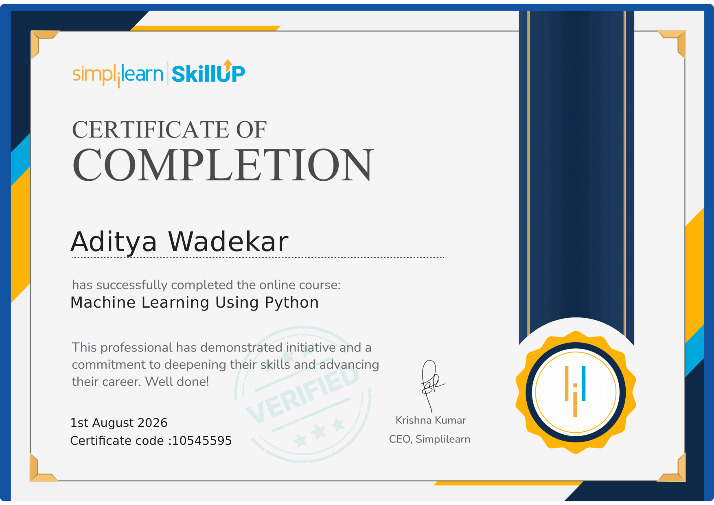
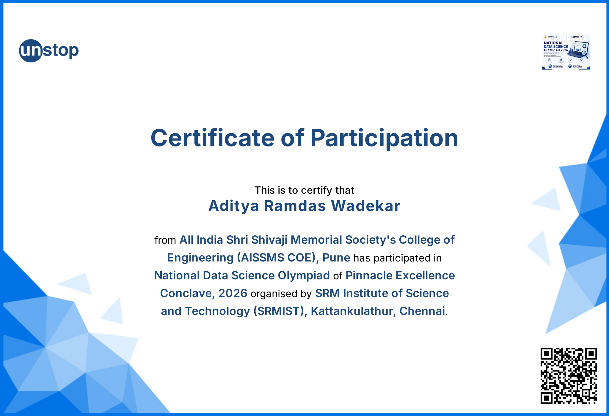
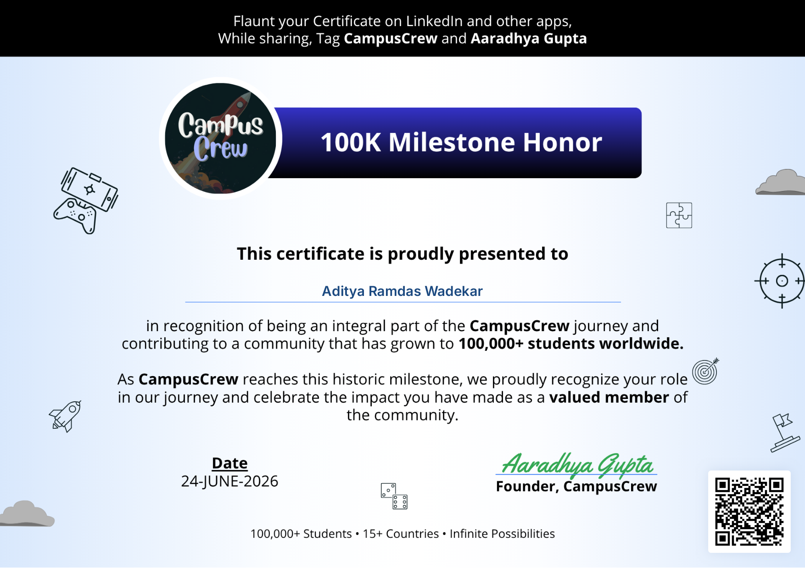
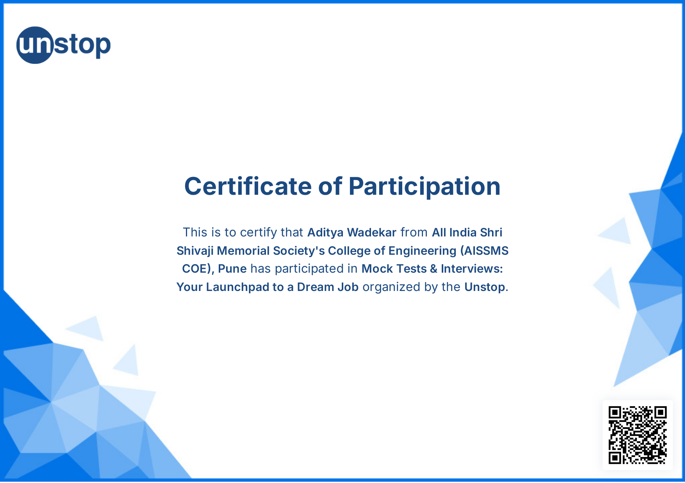

Machine Learning & Data Science Student
Third-year Robotics & Automation Engineering student at AISSMS COE, Pune. I build regression and NLP models, and have processed datasets exceeding 1M rows using Pandas — most recently forecasting crop yields for 203 countries with Huber-regularized Ridge Regression.
The Motivation: Climate volatility and trade policy shifts disrupt global crop supply chains. I built a system to forecast crop yields at a country/crop level using historical FAOSTAT data, prioritizing model stability over raw accuracy since outlier years (droughts, floods) skew simple regression models heavily.
The Data Challenge: I engineered a memory-efficient Pandas pipeline to clean and process a dataset of 1.1 Million historical records spanning FAOSTAT records across 203 countries and 280 crop categories.
The ML Approach: I trained localized Huber-regularized Ridge Regression models with degree-2 polynomial features, comparing against standard OLS and plain Ridge. Huber loss reduced RMSE volatility across outlier-heavy years (droughts/floods) by 30%, without sacrificing R² on normal years.
Lessons Learned: High-dimensional datasets require statistical rigor. I learned that handling outlier supply years with a robust loss function (Huber) prevents model skewing far better than simply feeding more data into complex neural networks.
An NLP text classification pipeline that processes raw text to identify stress-indicative language, comparing multiple models and deploying via a FastAPI backend for real-time predictions.
Text-based mental health signals are abundant but unstructured, and manual review doesn't scale. I built a classifier to flag stress-indicative language in raw text, framed as an early-detection support tool.
Achieved 80.44% accuracy / 80.0% F1-score on held-out data. Learned that dataset scale alone doesn't guarantee model quality - class imbalance handling and metric choice (recall on the minority class) mattered more than raw sample count for this problem.
A content-based recommender for movies, using TF-IDF vectorization on metadata and cosine similarity to rank top-N matches. Tested against 4,803 items with cosine similarity distance metrics.
Exploring feature representation matrices and metric spaces to compute similarity scores between textual metadata entries.
Matrix operations scale quadratically with dataset width. I learned how sparsity impacts performance and how to write clean vector math scripts rather than looping manually.
A regression pipeline predicting property valuations from a 545-record housing dataset, comparing Lasso and Ridge regularization to handle multicollinearity between size, location index, and room count. Final model: 66.09% R², 1,083,568 RMSE.
To understand the core structural factors (size, location indices, rooms) that impact real estate pricing, establishing an end-to-end pipeline from data cleaning to evaluation.
Feature scaling and proper handling of categorical variables are critical. I learned how multi-collinearity can inflate regression coefficients and how regularization stabilizes model weight calculations.
Submitted documentation pull requests to the official Pandas repository, proposing cross-reference enhancements between API endpoints and user guides. Gained hands-on experience navigating Pandas' contribution guidelines, code reviews, and git collaboration workflows. View PR
Studying deep neural network architectures, backpropagation dynamics, and optimization algorithms to build robust predictive representations from complex datasets.
Exploring sequence-to-sequence models, tokenization, and transformer architectures to process text pipelines and construct intelligent language understanding layers.
Exploring OpenCV methodologies for feature extraction, contour mapping, and real-time feed processing to feed visual coordinates into predictive layers.
Structuring robust ETL pipelines using FastAPI and optimized Pandas chunks to handle high-frequency sensor readings and database entries efficiently.
Reviewing active documentation issues in the Pandas dev repository to contribute further utility fixes and improve code guidelines for future users.




Looking for ML / Data Science internships for Summer 2027, particularly in applied ML or data pipeline work. Email me directly — I respond within a day.
SEND AN EMAIL